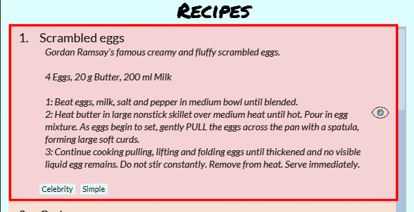

Overview
Cooking Papa is a desktop cookbook application used to manage recipes and ingredients for cooking. The user interacts with it using a CLI, and it has a GUI created with JavaFX. It is written in Java, and has about 15 kLoC.
Summary of contributions
-
Major enhancement: Implemented
inventory cook recipecommand-
What it does: Allows the user to remove all ingredients of a specified recipe from their inventory after cooking it.
-
Justification: This feature improves the usability of the application significantly as users need to remove the used ingredients from their inventory after preparing a recipe. The application should thus provide a convenient command to assist the user in accomplishing this task.
-
Highlights: This feature will be frequently used as it allows users to update their inventory after preparing a recipe.
-
Credits: The implementation and testing of the
Ingredient,IngredientList,InventoryandCookbookclasses was a team effort which is vital to the successful implementation of this feature.
-
-
Minor enhancement: Implemented commands under
cookbookcategory-
Implemented the add, remove and view commands and their parsers
-
Implemented skeleton classes for the search commands and their parsers
-
-
Code contributed: [Code contributed by @shanecsj]
-
Other contributions:
Contributions to the User Guide
Given below are sections I contributed to the User Guide. They showcase my ability to write documentation targeting end-users. |
Cookbook Commands
Cookbook commands are commands that allow users to add and remove recipes from the cookbook, as well as view recipes stored in the cookbook. More commands can be done with recipes, and are covered in [Recipe].
View a recipe from the cookbook
This command allows you to view a recipe, the ingredients required, and the steps to cook it.
-
Format:
cookbook view recipe INDEX -
Example:
| Command | Result |
|---|---|
|

Note: you must have added a recipe to the cookbook, otherwise Cooking Papa will not be able to show you the details of the recipe. |
A recipe’s details can also be viewed by pressing the "eye" icon, without the need to type in the command above:

Add a new recipe to the cookbook
This command allows you to add (and store) a new recipe with the provided recipe details to the cookbook.
-
Format:
cookbook add recipe n/NAME d/DESCRIPTION [i/INGREDIENT]… [q/QUANTITY]… [s/STEP]… [t/TAG]… -
Examples:
| Command | Result |
|---|---|
|
Adds a recipe with only its name and description specified. New recipe added: Bacon Carbonara Description: Best cream pasta made in Italy Ingredients: Preparation Steps: Tags: |
|
Adds a recipe with its name, description, ingredients, steps, and tags specified. New recipe (index 1) added: Chicken Ham Sandwich |
Note: the number of ingredient names provided must be the same as the number of ingredient quantities provided, otherwise Cooking Papa will not be able to add the recipe.
Remove a recipe from the cookbook
This command allows you to remove a recipe of the specified index from the cookbook.
-
Format:
cookbook remove recipe INDEX -
Example:
| Command | Result |
|---|---|
|
Removed recipe: Bacon Carbonara from the cookbook Note: you must have added a recipe to the cookbook, otherwise Cooking Papa will not be able to remove the recipe. |
Note: you must have added a recipe to the cookbook, otherwise Cooking Papa will not be able to remove the recipe.
Search recipes by keyword
This command allows you to search for recipes by keywords, returning a list of recipes.
Note: Adding more keywords will not narrow the search results, but will expand the search results to return any recipe that contains any of the given keywords.
-
Format:
cookbook search recipe k/KEYWORD… -
Example:
| Command | Result |
|---|---|
|
Searches the cookbook for recipes with names matching the keyword 'Carbonara'. |
|
Searches the cookbook for recipes with names matching the keywords 'Carbonara', or |
Search recipes by tag
This command allows you to search for recipes by tags, returning a list of recipes.
Note: Adding more tags will not narrow the search results, but will expand the search results to return any recipe that contains any of the given tags.
-
Format:
cookbook search tag t/TAG… -
Examples:
Command |
Result |
|
Searches the cookbook for recipes wisth tags matching 'Easy'. |
|
Searches the cookbook for recipes with tags matching 'Pasta', or 'Cream', or 'Easy'. |
Search recipes by ingredients owned
This command allows you to see search for recipes you can cook with your current inventory of ingredients.
-
Format:
cookbook search inventory -
Example:
| Command | Result |
|---|---|
|
Searches the cookbook for recipes whose ingredients are available in the inventory. |
List all recipes in the cookbook
This commands allows you to view the whole collection of recipes in the cookbook. Additionally, it can be used after using the search commands to view all the recipes.
-
Format:
cookbook list -
Example:
| Command | Result |
|---|---|
|
Lists all recipes in the cookbook |
Contributions to the Developer Guide
Given below are sections I contributed to the Developer Guide. They showcase my ability to write technical documentation and the technical depth of my contributions to the project. |
Remove ingredients of a recipe from the inventory
Implementation
The mechanism is facilitated by InventoryCookCommand, which extends the Command abstract class. The format of the command is as follows: inventory cook recipe INDEX.
This command was implemented to allow users to remove multiple ingredients and their quantities found in a recipe from their inventory.
If the inventory contains an ingredient that has a higher quantity than specified in the selected recipe, its quantity will be subtracted accordingly.
If the ingredient has a lower quantity than specified in the selected recipe or if there is a missing ingredient in the inventory, the feature will not be executed and an error will be thrown.
Without this command, users can only remove ingredients through the inventory remove ingredient command one at a time.
Moreover, they have to constantly cross-check the ingredient quantities in the recipe for accuracy.
Therefore, this command provides convenience after users have prepared a recipe and wish to update their inventory ingredients through a single step.
Below is a step-by-step sequence of what happens when a user enters this command:
-
The user enters an inventory cook command
inventory cook recipe INDEXusing the command line input. -
InventoryCookCommandParserparses the input to check and verify the input provided by the user. If the input provided is invalid, aParseExceptionwill be thrown. -
The valid index is then passed to
InventoryCookCommandas anIndexobject. -
LogicManagercallsInventoryCookCommand#execute()and checks if theIndexprovided is within bounds and if the specifiedRecipecontains ingredients. Otherwise, aCommandExceptionis thrown. -
Subsequently, two checks are performed to check if the inventory contains all of the ingredients specified and whether those quantities are sufficient to be subtracted.
-
If all the checks passed,
model#removeInventoryIngredientis called through astream()to remove the ingredients of a selected recipe from the inventory.selectedRecipe.getIngredients().stream().forEach(model::removeInventoryIngredient); -
A
CommandResultwith a success message is returned toLogicManagerand passed back toMainWindowwhich displays the text to the user through the GUI.
The following sequence diagram shows how the command inventory cook recipe 1 works:
Design considerations
Aspect: Allowing users to execute the inventory cook recipe command when there are missing or insufficient ingredients in the inventory.
Design A: Allow the execution of inventory cook recipe command regardless of missing or insufficient ingredients in the inventory |
Design B (Current choice): Do not allow execution of inventory cook recipe command when there are missing or insufficient ingredients in the inventory |
|
|---|---|---|
Description |
Allow the users to execute the command regardless of missing or insufficient ingredients in the inventory. Missing ingredients will be ignored and ingredients with insufficient quantities will be entirely removed. |
When there are missing or insufficient ingredients in the inventory, the execution of the command will throw an error to warn users whether they have missing ingredients or insufficient ingredients in their inventory. |
Pros |
Straightforward for users to use the command as they do not have to check whether they have all the ingredients in sufficient quantities. |
Enhances user experience. The application can notify users that they have missing or insufficient ingredients when they attempt to prepare a recipe through this command. |
Cons |
Reduces code readability as more methods and steps are needed to check and isolate a list of missing and insufficient ingredients. This list of ingredients are also to be treated differently from the other ingredients when removing from the inventory. |
A potential hassle for users as they have to ensure that all ingredients are present and are sufficient in their inventory to use the command. |
Miscellaneous
UML Diagrams
Sequence Diagram
Activity Diagram

inventory cook recipe commandClass Diagram
Cookbook class